CS184/284A Fall 2026 Homework 1 Write-Up
Link to webpage: cs184.eecs.berkeley.edu/sp25
Link to GitHub repository: github.com/cal-cs184-student/hw0-cici
Overview
In this homework, I built a rasterizer that can render triangles, apply transformations, interpolate colors, and map textures. I started with triangle rasterization and supersampling, then implemented barycentric interpolation for colors and texture coordinates. I also implemented nearest and bilinear pixel sampling, as well as mipmap level sampling to reduce aliasing when textures are displayed at different sizes. I found it interesting how simple visual operations involve a lot of math and careful implementation, and how the same problem, aliasing, can be tackled using multiple methods depending on where it occurs and the tradeoffs we are willing to make. It was also cool to see how abstract concepts can directly affect how the final image looks. One last takeaway I had is that coming up with good examples for testing and evaluating different techniques is much more important than I previously thought, especially in a more human-centered field like computer graphics, where deterministic tests can be difficult to design.
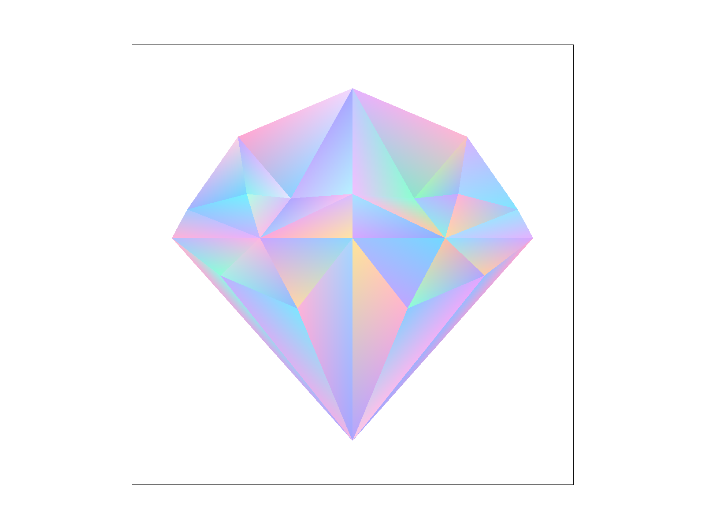
Task 1: Drawing Single-Color Triangles
For my basic implementation of raterizing, I went through every pixel in the triangle's bounding box and did the three line tests at the center of each pixel. If all 3 tests return positive value or all test return negative value (to ensure both clockwise and counterclockwise work), that pixel is filled. This is basically checking each sample within the bounding box of the triangle, so it should be as efficient as sampling only within the bounding box of the triangle.
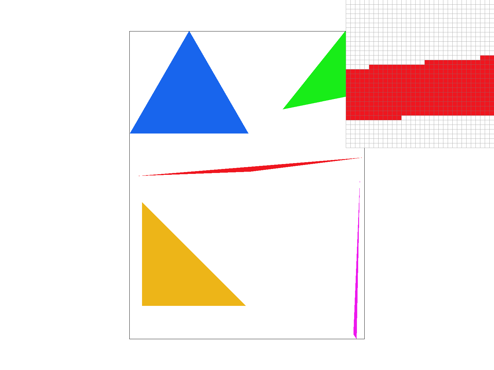
Extra Credit: Speeding Up Rasterization
For an optimized version, I noticed that the line test values only changes by a constant amount when moving from one pixel to the next, so instead of recalculating the whole expression each time, I update based on the previous value with just an addition. Also, once we enter and then leaves the triangle, I can stop checking the rest of that row. This avoids some unnecessary calculations.
Here is a table comparing my basic and optimized implementations:
| implementation | average time (ms) |
|---|---|
| basic bounding box | 0.452 |
| optimized | 0.270 |
Task 2: Anti-aliasing by Supersampling
Supersampling helps anti-alaising triangle edges because pixels that are not fully covered can have middle colors instead of being completely inside or outside the triangle. This makes the edges not aligned with the pixel grid appear smoother and thus reduces jagged artifacts.
I implemented supersampling using a 1D sample buffer of size width * height * sample_rate, so each pixel has sample_rate separate Color entries stored. During triangle rasterization, I loop through the pixels in the triangle's bounding box and then through each subpixel sample. Each sample is tested separately, and if it lies inside the triangle, I store the triangle color at (y * width + x) * sample_rate + index. I also modified set_sample_rate and set_framebuffer_target so that the sample buffer is resized whenever the sample rate or framebuffer size changes, and modified fill_pixel so that points and lines fill all sample_rate entries belonging to a pixel. In resolve_to_framebuffer, I summed the sample_rate colors belonging to each pixel, divide by sample_rate, and write the average color to the framebuffer. As mentioned earlier, this anti-alaises triangle edges because partially covered pixels can have their final color somewhere in between, resulting a smooth/blurred edge.
|
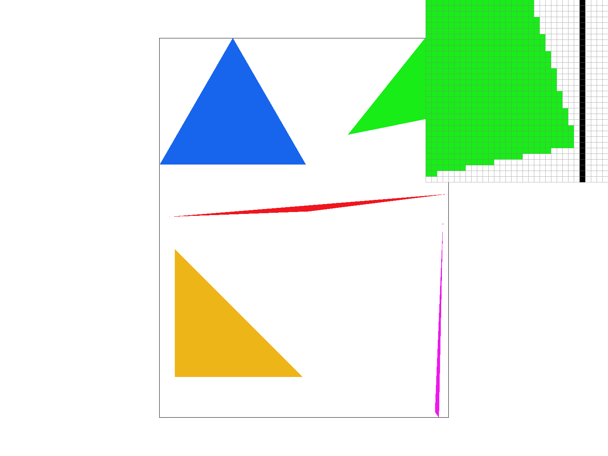 |
|
|
Extra Credit: Jittered Supersampling
I implemented jittered supersampling as an alternative. Instead of always placing each sample at the center of its subpixel grid cell, I randomly shifted the sample to another position within that cell. I tested the two methods on a pattern of many thin concentric circles, where the regular spacing makes aliasing especially noticeable. As shown in the images below, grid supersampling produces more structured artifacts as errors lined up to form patters. Jittered sampling breaks up this alignment by varying the sample positions, so these structured artifacts are much less noticeable. The tradeoff is that jittered sampling introduces some noise instead, but the errors are less regular so it visually makes more sense.
|
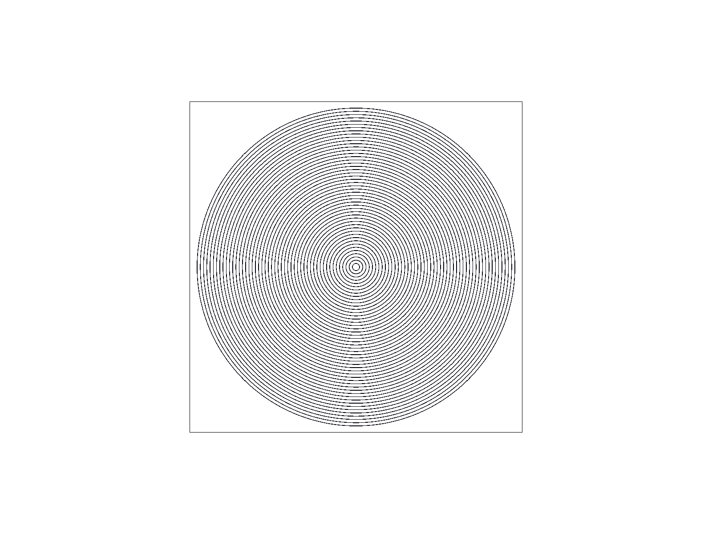 |
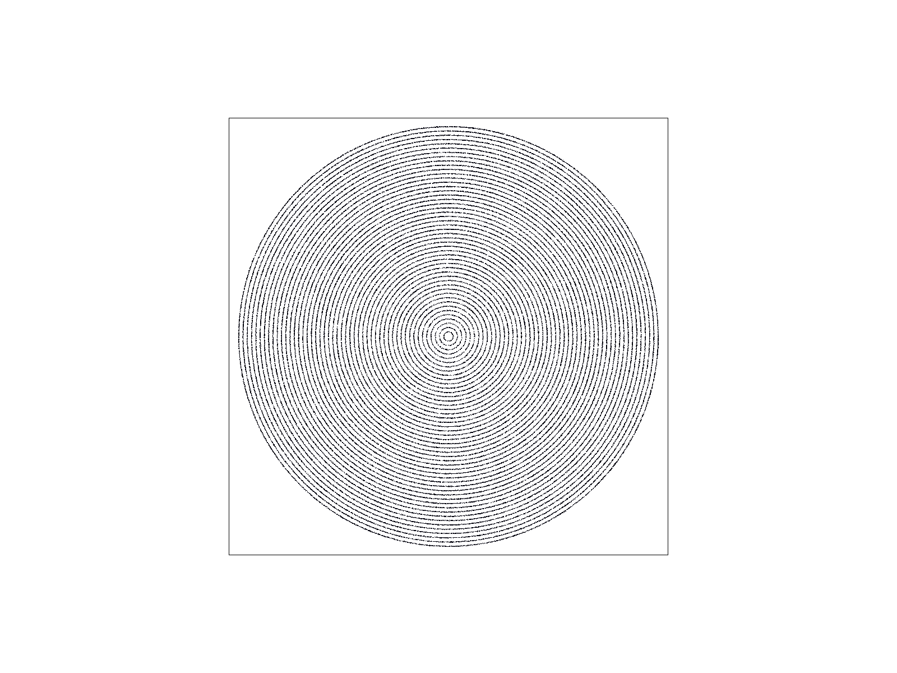 |
Task 3: Transforms
I modified robot to look like it is jumping and waving both of its arms in the air. I used rotations and translations to raise both arms and bend her legs into a jumping pose. I also changed the colors and mimicked shading by using a darker color for some triangles. Most of the pose was created using nested transforms. For example, to create one raised arm, I first rotated the entire group containing the upper and lower arm, then adjusted the upper arm by rotating it slightly more.
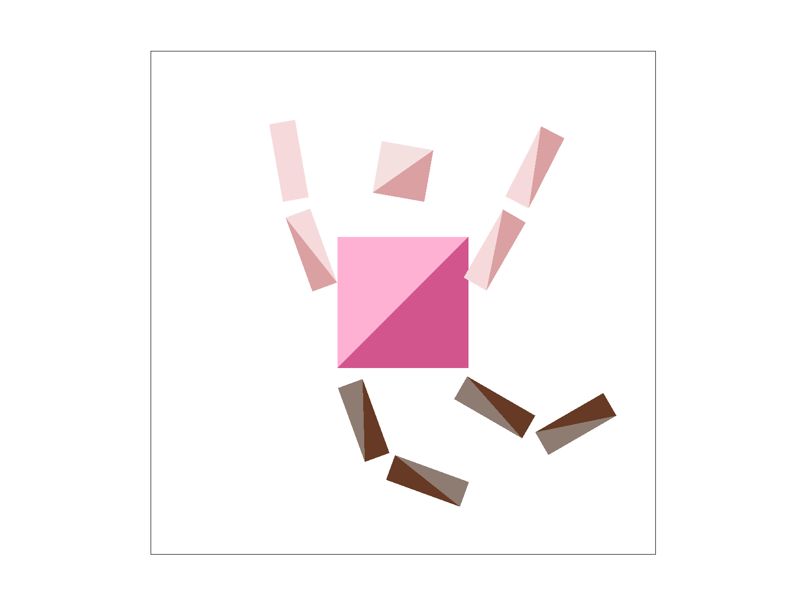
Extra Credit: Viewport Rotation
For ab extra GUI feature, I added viewport rotation: pressing A rotates the view counterclockwise and pressing B rotates it clockwise. To do this, I first added a view_angle variable and initialized it to 0 in DrawRend's init(). I then added two new cases in the keyboard handler so that pressing A subtracts view_angle by 5 degrees and pressing B adds 5 degrees. In redraw(), when drawing the canvas border, I created a view_rotation matrix and inserted it between the SVG-to-NDC and NDC-to-screen transformations. Since rotating directly would rotate around (0,0), I first translated the center of NDC space to the origin, applied the rotation, and then translated it back. The final matrix is ndc_to_screen * view_rotation * svg_to_ndc. This transform is used both when drawing the SVG itself and when transforming the four corners of the SVG canvas, so the black border rotates together with the image. One thing I noticed necessary after testing was that I also needed to reset view_angle to 0 when resetting the view.
|
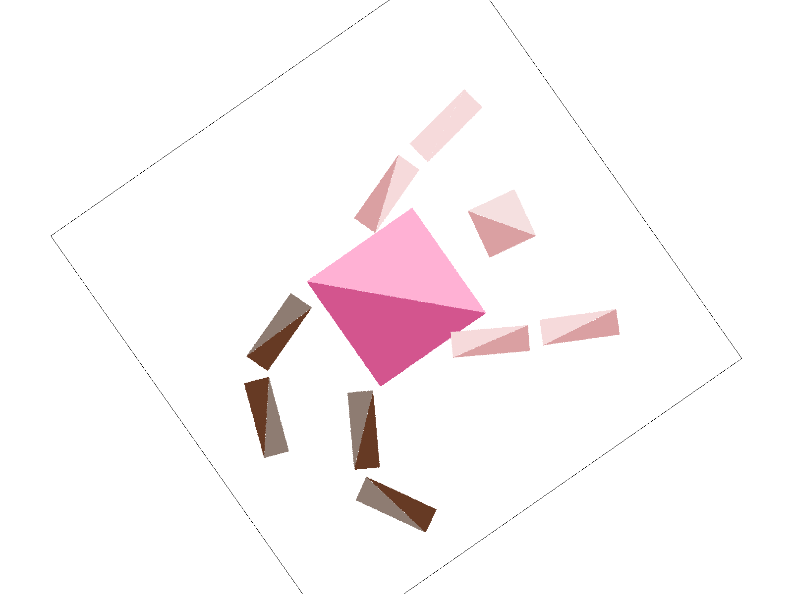 |
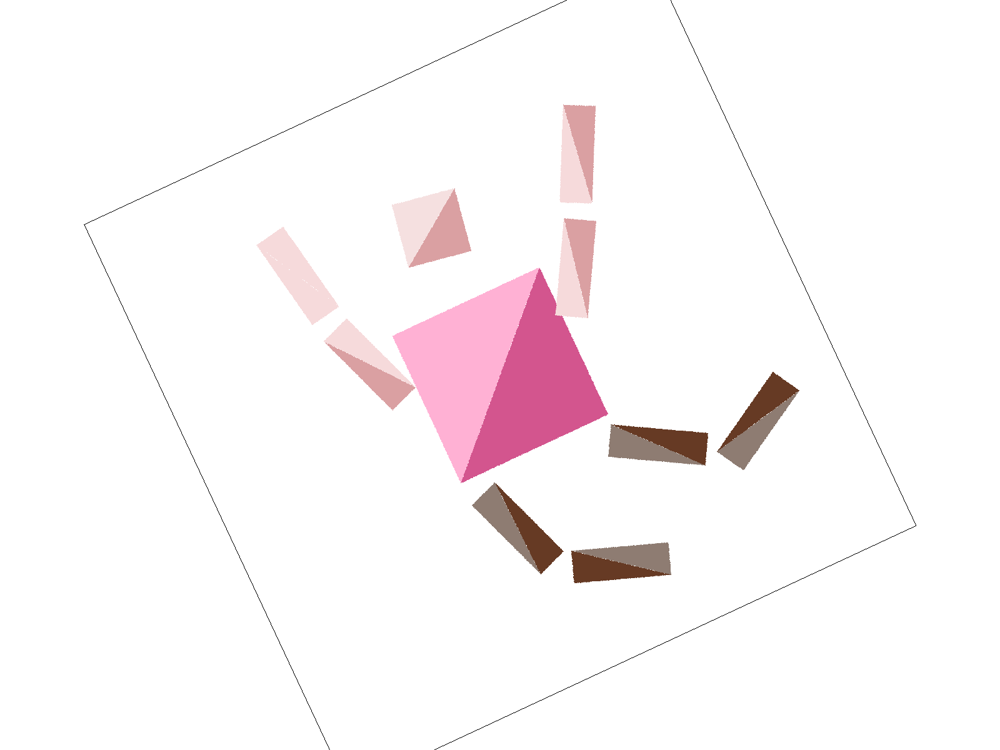 |
Task 4: Barycentric coordinates
Barycentric coordinates express a point inside a triangle as a weighted sum of its three vertices. The three weights alpha, beta, and gamma add up to 1, so each represents how stronge the point is associated with one vertex. For example, at one vertex, the corresponding weight to that vertex is 1, while the other two are 0. This is also illustratedin the image below on the left, where each vertex is assigned a different color. The top vertex is completely red, and points close to that vertex are mostly red because the weight associated with the red vertex is larger. As we move away from the red vertex and toward the other vertices, its weight decreases while the other weights increase, causing the colors to gradually blend together. This way when computing the barycentric coordinates of each sample, I could get smooth color transitions.

|
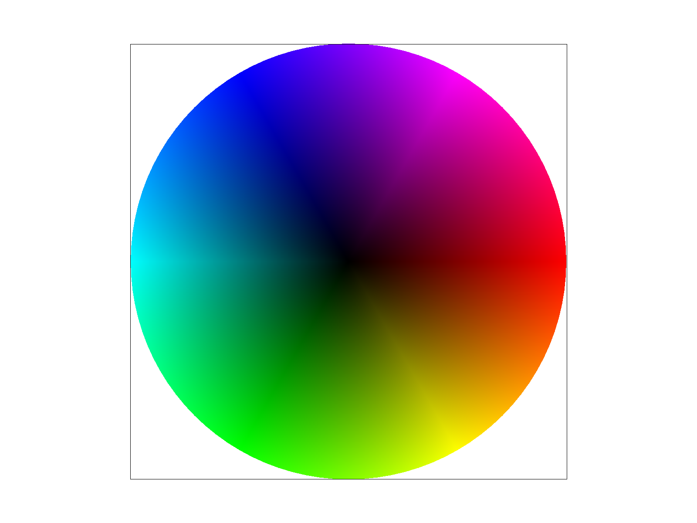 |
Task 5: "Pixel sampling" for texture mapping
Pixel sampling is choosing what pixel from the texture space to use for a pixel in the screen space. In my implementation, I first get the barycentric coordinates to interpolate the texture coordinates for each sample inside the triangle. I then used this to determine what color should be read from the texture space. For nearest sampling, I chose the texel whose center is closest to the calculated texture coordinate. For bilinear sampling, I instead looked at the four texels surrounding the requested coordinate and interpolated between their colors based on the weights.
To compare the two methods, nearest sampling is simpler and faster, but can make textures look more blocky or jagged because it only uses the color of a single nearest texel, as shown on the right column of images below, where the white lines are more jaggy and look discontinuous when not aligned with the grid. Meanwhile, bilinear sampling produces smoother transitions between texels, as seen from the two images in the left column. The difference is largest when the texture is magnified, so that one texel covers several screen pixels. Nearest sampling gives all of those pixels the same color and then jumps abruptly at the boundary, which looks blocky. Bilinear sampling interpolates across the range, so the image looks smooth.
|
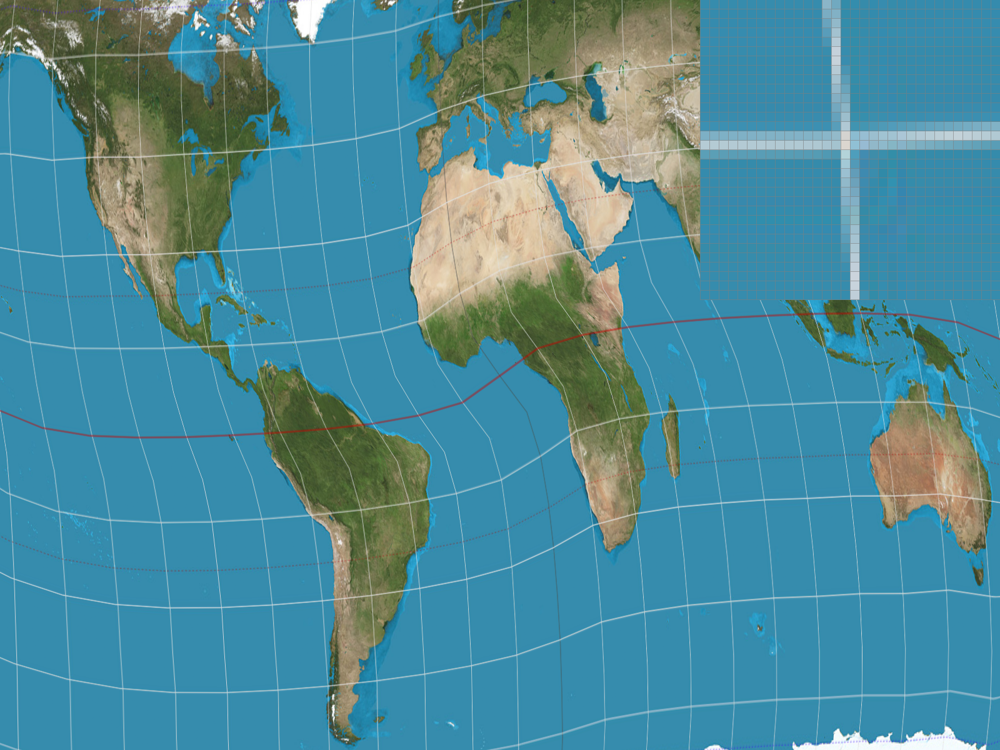 |
|
|
|
|
The four images above show examples of the differences of the 2 methods. As mentioned before, the nearest-sampled images look more blocky and some fine lines looked especially jagged and broken because each sample simply takes the color of one texel, so transitions can change abruptly when the nearest texel changes. Bilinear sampling produces smoother lines because it blends the four surrounding texels instead of choosing only one. Increasing the sample rate from 1 to 16 can fix this problem a little by smoothing the boundaries, as each output pixel averages samples. In my example, supersampling + bilinear sampling produces the smoothest line and best anti-alaising effects.
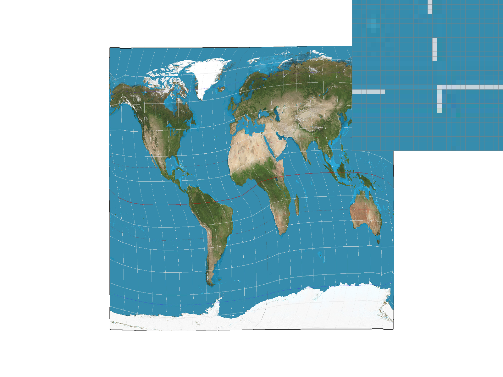
Task 6: "Level Sampling" with mipmaps for texture mapping
Level sampling chooses which mipmap level of a texture based on how much the texture coordinates change in the screen. If one screen pixel covers a large area of the original texture, sampling directly from the full-resolution image can cause aliasing because many texels are being represented by only one pixel. Therefore, we could create some lower-resolution versions of the texture beforehand and choose an appropriate version later, so that some of the high-frequency detail is already filtered out.
To implement this, I estimated the change in texture coordinates by using differences to approximate their partial derivatives with respect to the screen-space coordinates. Then I converted these differences into texel space, and used them to compute an appropriate mipmap level. For L_ZERO, I always sampled from level 0. For L_NEAREST, I rounded the computed level to the nearest mipmap level. For L_LINEAR, I sampled from the two surrounding mipmap levels and linearly interpolated between them based on the fraction part of the computed mipmap level.
Each of the three sampling methods have their strength and weaknesses.
|
|
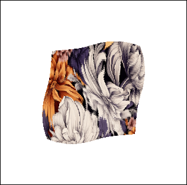 |
|
L_NEAREST + P_LINEAR |

|

|
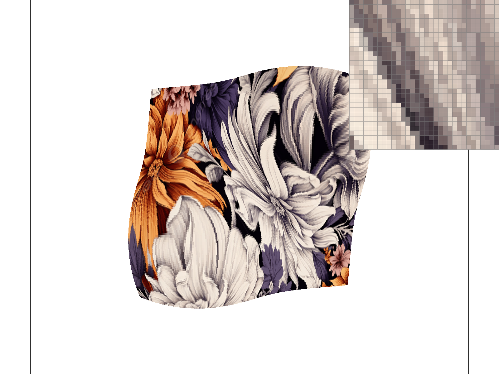 |
|
The above images show examples comparing different level mapping methods when we zoom in and out . With L_ZERO, we get the full-resolution texture, so an overall "sharp" render. This preserves detail, but result in aliasing when the texture (for example the jagged edges in the images). With L_NEAREST, the renderer always chooses a lower-resolution mipmap when many texels map to one screen pixel, which removes more of the detail that would otherwise cause aliasing. Combining L_NEAREST and P_LINEAR (as mentioned before, P_LINEAR makes the result smoother than P_NEAREST because it blends neighboring texels) gives the smoothest result of these four because it chooses an appropriate texture resolution and also interpolates between neighboring texels within that level.
Extra Credit: Anisotropic Filtering
For an extra filtering method, I experimented with anisotropic filtering. It looks at how stretched the texture is and takes more samples along this more stretched/longer direction. In comparisons to the other methods, this should preservse more detail while making sure we have less noticeable aliasing. I did this by calculating the texture-space change in both screen-space directions, using the the shorter one to select the mipmap level. I then took multiple evenly spaced samples along the longer axis and averaged their colors. Trilinear sampling also reduces aliasing well, but anisotropic filtering keeps some of the stretched details clearer. As noted by the table below, the tradeoff is that it is slower since it needs to take more samples.
|
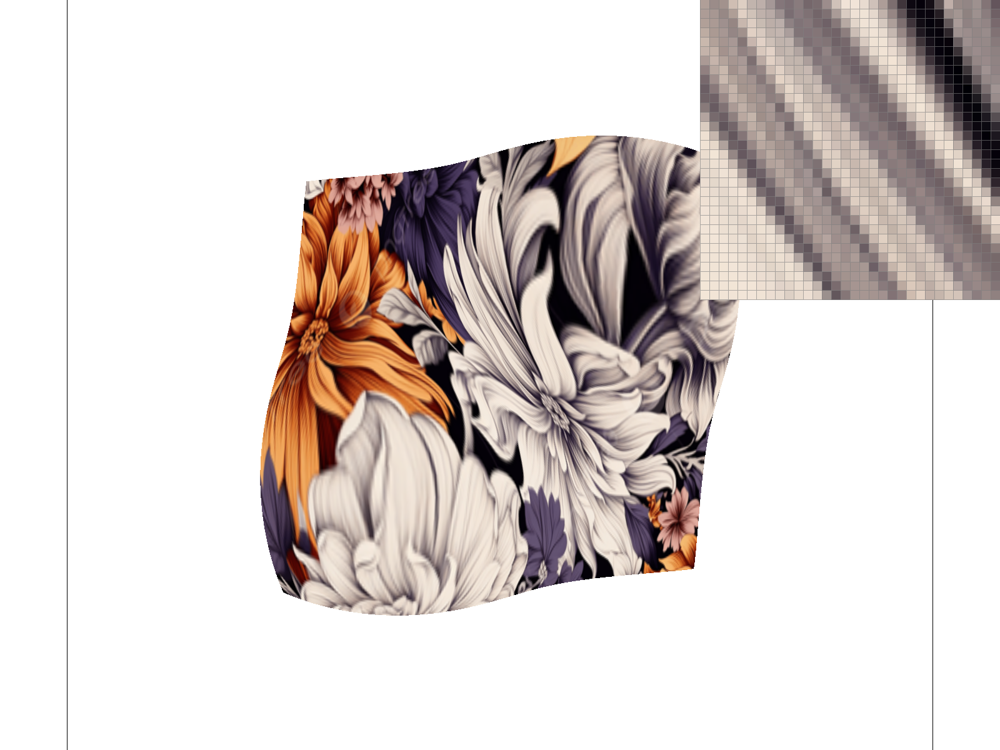 |
| sampling method | average time (ms) |
|---|---|
| Nearest | 5.073 |
| Bilinear | 7.259 |
| Trilinear | 15.842 |
| Anisotropic | 20.872 |